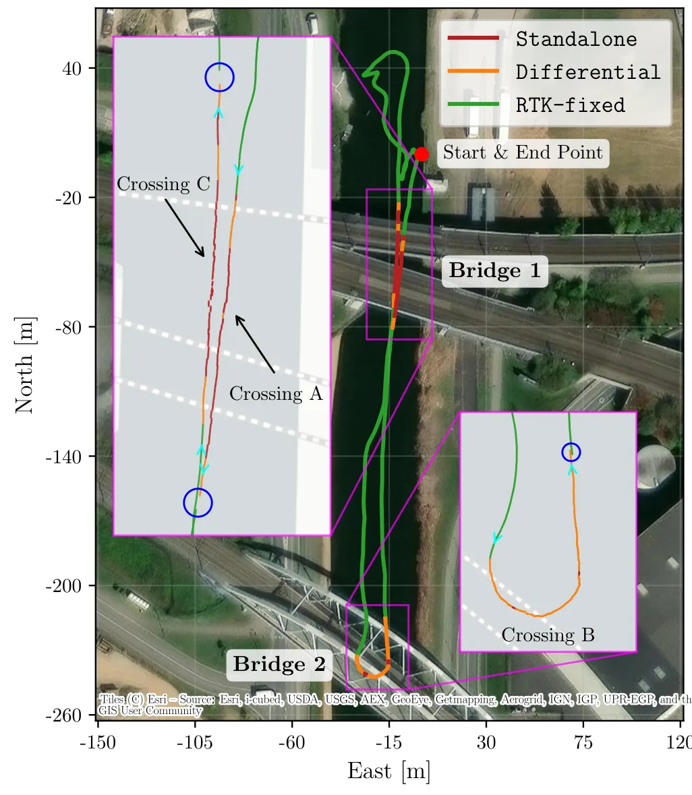
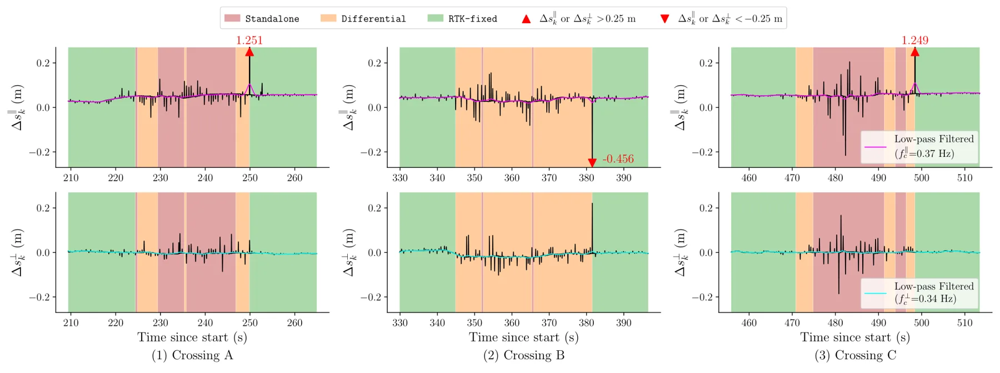
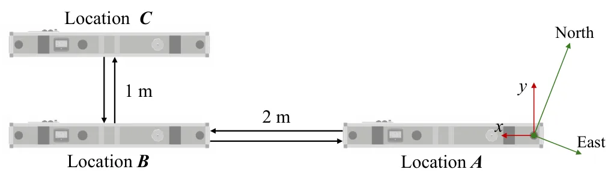
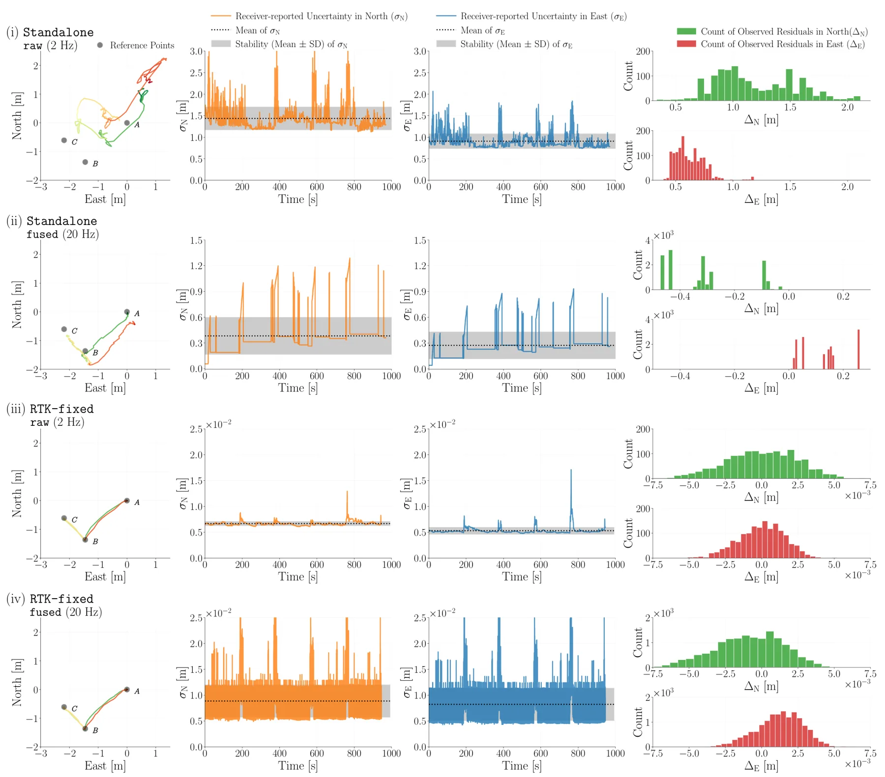
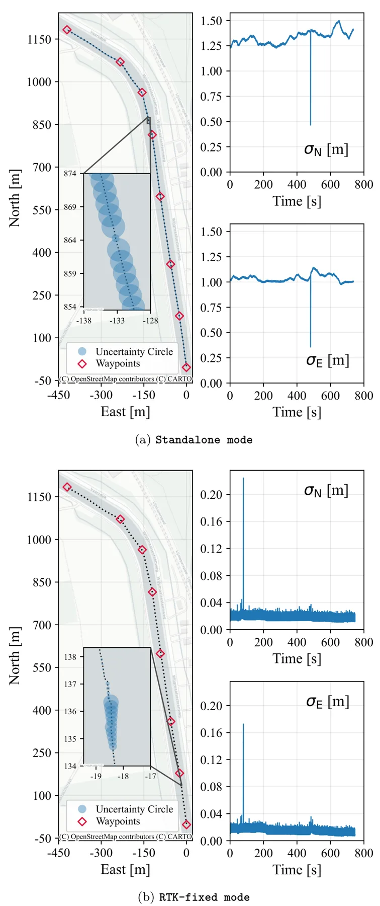
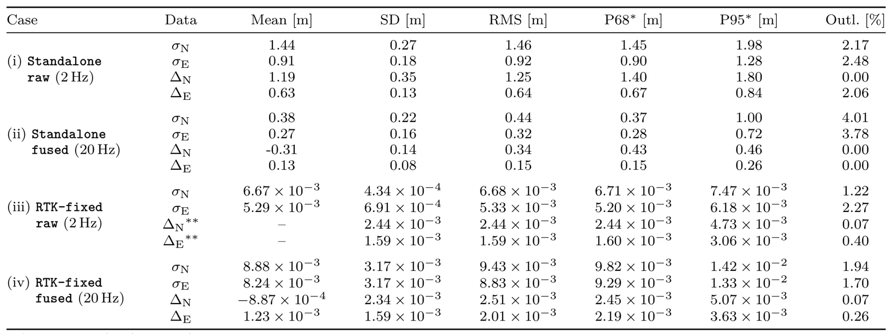

RTK 增强与 INS 集成对 GNSS 定位精度和连续性的影响Impact of RTK Augmentation and INS Integration on GNSS Positioning Accuracy and Continuity: A Benchmarking Study on Inland Waterways
直接服务 GNSS/INS 鲁棒定位和 GNSS-aided SLAM 观测可信度建模，实测价值高。
一句话工作总结
用真实水道实验量化 RTK loss 与 INS 集成对 GNSS 定位连续性、恢复跳变和控制性能的影响。
摘要
本文在内河航道场景中实测 AsteRx-i3 D Pro+ GNSS/INS 接收机，比较 standalone GNSS、GNSS+INS、RTK GNSS、RTK GNSS+INS 四种配置，并分析桥下通行、静态测试和闭环路径跟踪中的精度与连续性。结果显示桥梁遮挡和 RTK 改正丢失会导致精度下降、不确定性增大，以及恢复阶段超过 1 m 的状态跳变；INS 能短时维持连续性，但也可能引入漂移和瞬态不确定性变化。
RTK augmentation andINS integration are widely used to improve GNSS positioning performance. However, on inland waterways, bridges and surrounding structures can degrade satellite visibility and correction availability, causing RTK augmentation loss, and GNSS/INS fusion transients. Since these effects depend on the local environment and sensor configuration, nominal receiver specifications are insufficient, and deployment-specific characterization is required. This paper presents a benchmarking study of an AsteRx-i3 D Pro+ GNSS/INS receiver installed within the mobile Sensor Box developed at KU Leuven. The study combines a real-world bridge-passage case study, static benchmarking, and closed-loop path-following experiments. The static benchmarking evaluates four receiver configurations: standalone GNSS, standalone GNSS with INS integration, RTK-augmented GNSS, and RTK-augmented GNSS with INS integration. The closed-loop experiments use INS-integrated GNSS as the navigation input and compare path-following operational performance with and without RTK augmentation. Results show that correction loss during bridge passage causes reduced positioning accuracy, increased positioning uncertainty and recovery-induced state jumps exceeding 1 m. Static benchmarking and closed-loop experiments confirm that RTK augmentation substantially improves positioning precision and uncertainty consistency, while INS integration supports short-term continuity during RTK unavailability but may introduce drift, bias, or transient uncertainty variations. By characterizing the deployment-specific receiver behavior with RTK augmentation and INS integration, this study motivates higher-level state estimation as a necessary next step toward spatially continuous and uncertainty-consistent positioning on inland waterway. The experimental data are released at: https://doi.org/10.5281/zenodo.20541733.
中文解读摘录
- 日期：2026-06-05
- 链接：arXiv / PDF
- 作者简写：Y.-Y. Zhang, J. Billet, J. Swevers, P. Slaets
- 领域标签：GNSS / RTK / INS / GNSS-SLAM 可信度建模
- 背景/动机：桥梁、岸边结构等会削弱卫星可见性和 RTK 改正可用性；部署时只看接收机标称精度不足，尤其不能忽略 RTK 恢复阶段的状态跳变。
- 主要创新点/工作：在 KU Leuven mobile Sensor Box 上实测 AsteRx-i3 D Pro+，比较 standalone GNSS、GNSS+INS、RTK GNSS、RTK GNSS+INS，并覆盖桥下通行、静态 benchmark 和闭环路径跟踪。
- 为什么值得关注：论文明确报告 RTK 改正丢失后会产生定位精度下降、不确定性膨胀和超过 1 m 的恢复跳变；这对 GNSS-aided SLAM 的观测 gating、因子权重和故障检测非常实用。
图表/页面预览

{kind=link}

{kind=link}

{kind=link}

{kind=link}

{kind=link}

{kind=link}
